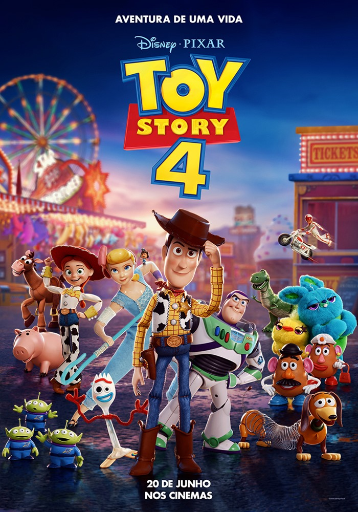
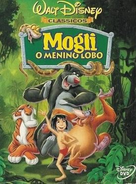

Mais assistidos da semana |
|
Kubo e as cordas mágicas (2016)Uma aventura em um Japão fantástico. O bondoso Kubo invoca acidentalmente um espiríto de seu passado e agora tem que embarcar em uma aventura para proteger sua família de uma terrível vingança. Duração: 1h 41m - Infantil/Fantasia Pontuação na plataforma: 4,4 estrelas Assistir ao trailer |
|
|  | Toy Story 4 (2019)Forky é o novo brinquedo preferido da pequena Bonnie, mas não quer esse posto e então vai em busca do antigo brinquedo preferido de sua dona. Agora, cabe a Woody e seus amigos saírem em busca de Forky. Duração: 1h 40m - Animação/Aventura/Família/Comédia Pontuação na plataforma: 4,4 estrelas Assistir ao trailer |
|  | Mogli - O menino lobo (1967)Mogli é um menino que foi criado entre os lobos na floresta. Mas agora está em perigo, então seus amigos animais embarcam em uma aventura para levar o garoto em segurança até uma tribo humana. Duração: 1h 29m - Infantil/Musical Pontuação na plataforma: 4,0 estrelas Assistir ao trailer |